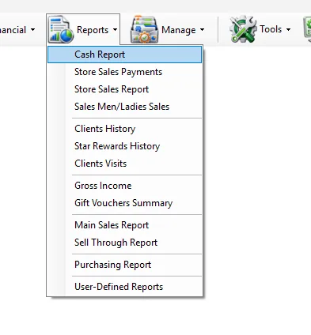
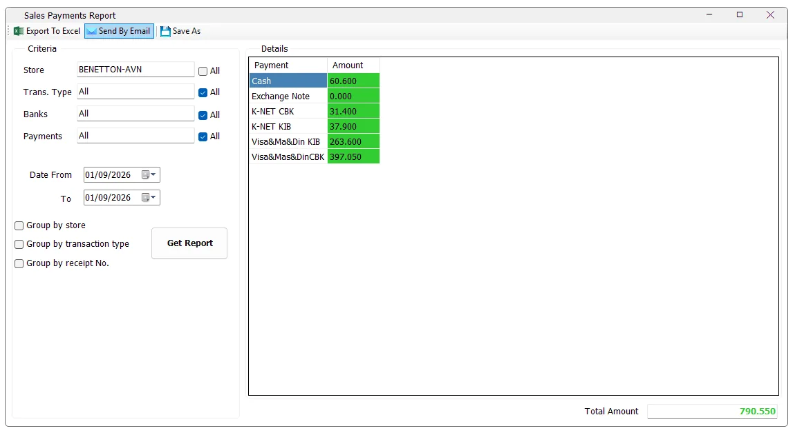
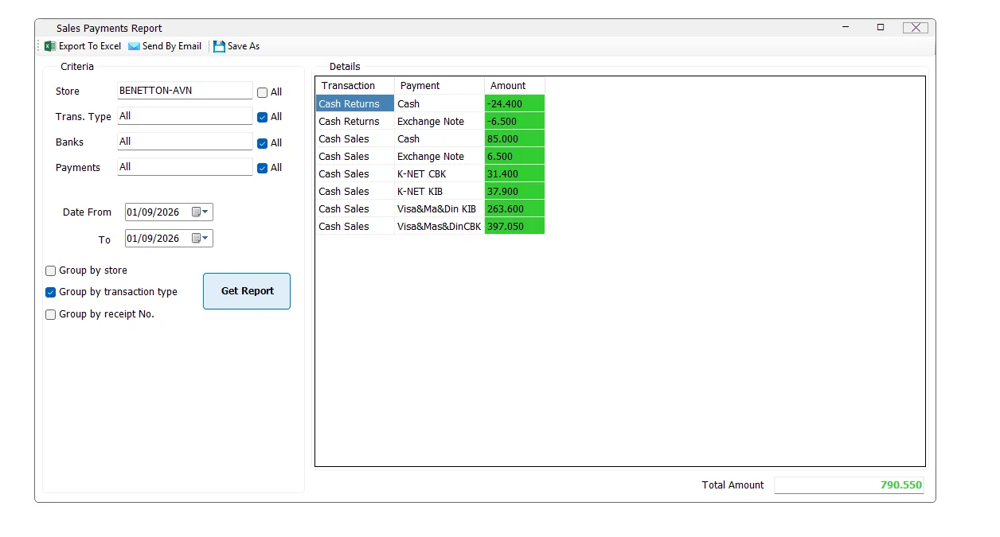
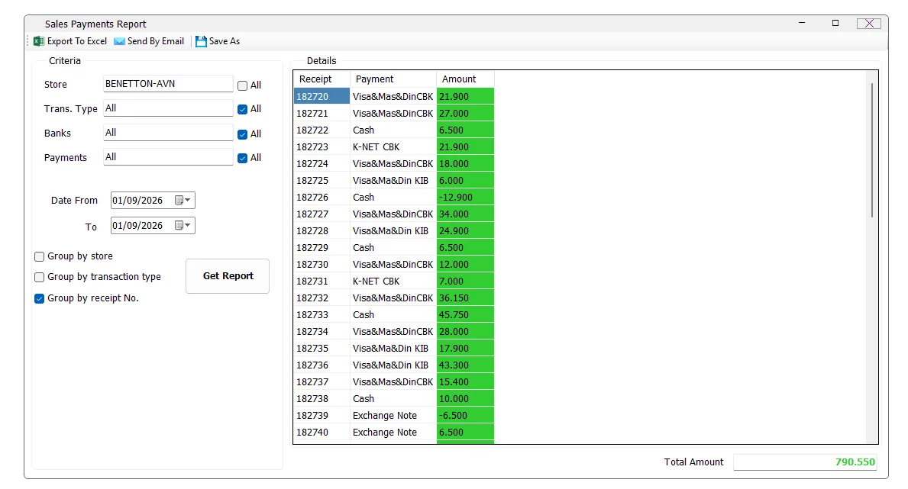

Sales Payments Report
The Sales Payments Report analyzes how cash-sale transactions were paid. It can summarize payment methods across one or many stores, filter by cash sales or cash returns, narrow results by bank or payment method, and optionally break the result down by store, transaction type and receipt number.

Run the report
- Select one or more Store values, or leave All selected.
- Select the required Trans. Type, or leave All selected.
- Optionally restrict the report by Banks and/or Payments.
- Select Date From and To.
- Select any required grouping: Store, Transaction Type and/or Receipt No.
- Click Get Report.
- Review the detail grid and the Total Amount shown at the bottom.
Using IMS multi-selection fields
Some IMS criteria fields open a compact multi-selection list instead of a normal drop-down. You can select several values without holding Ctrl.
- Click the criteria field to open the selection list.
- Click an item to select or deselect it. Continue clicking until the required combination is selected.
- Click Close, double-click an item, or click outside the list to apply the selection.
| Field display | Meaning |
|---|---|
| All | All available values are included. If no individual item remains selected, IMS automatically returns the field to All. |
| One name | Exactly one value is selected. |
| Multi Selected | Two or more values are selected. |
Criteria
| Criteria | What it does |
|---|---|
| Store | Limits the report to the selected store or stores. The list follows the stores available to the logged-in user. |
| Trans. Type | Limits the report to cash-side transaction types. In the current report these are Cash Sales and Cash Returns. |
| Banks | Limits payment activity to the selected bank or banks. |
| Payments | Limits the report to selected payment methods such as Cash, Exchange Note, K-NET or card/provider payment methods available in IMS. |
| Date From / To | Defines the transaction date range included in the report. |
If the logged-in user has access to only one store, IMS automatically selects that store and disables the All Stores option.
Bank and payment filtering
Banks and Payments are related. When exactly one bank is selected, IMS reloads the Payments list so that it contains payment methods associated with that bank. When multiple banks or All Banks are used, the broader payment-method list is available.
This makes it possible to answer questions such as “How much was collected by this bank?”, “How much was paid by this K-NET method?”, or “What was the net amount for a specific payment provider?” without changing the underlying report.
Payment summary
With no grouping options selected, the result contains one row per payment method and an Amount column. The bottom Total Amount is the sum of all displayed Amount values for the selected criteria.

Grouping options
The three grouping checkboxes are independent and can be used alone or together. IMS adds the selected fields before the Payment column.
| Grouping | Result |
|---|---|
| Group by store | Adds a Store column and separates payment totals by store. This is especially useful when several stores are selected. |
| Group by transaction type | Adds a Transaction column, separating Cash Sales and Cash Returns before showing each payment method. |
| Group by receipt No. | Adds a Receipt column so payment amounts can be reviewed at receipt level. |
If more than one option is selected, IMS combines them. For example, selecting Store + Transaction Type + Receipt No. produces a detailed result organized by Store, Transaction, Receipt and Payment.
Group by transaction type
This view makes sales and returns explicit. A return line can therefore show a negative payment value while sales for the same payment method appear as positive values.

Group by receipt number
Use receipt grouping when you need to trace payment activity back to individual receipts. The report keeps the selected Store, Transaction, Bank, Payment and date filters; only the level of detail changes.

Group by store
A screenshot is not required for every option. When Group by store is selected, IMS adds the Store column to the result and calculates payment totals separately for each selected store. It can be combined with Transaction Type and Receipt No. grouping when deeper detail is required.
Amount and Total Amount
The report calculates Amount by summing the payment value for each displayed group. If no optional grouping is selected, the group is simply Payment. If grouping is enabled, the same amount calculation is performed for each Store, Transaction and/or Receipt combination.
Total Amount is calculated by adding every Amount row currently returned by the report. Changing grouping should therefore change the detail level, not the overall total, as long as the filters remain the same.
Export, email and Save As
| Action | Behavior |
|---|---|
| Export To Excel | Exports the generated grid through the standard IMS report export function. |
| Send By Email | Sends the generated report through the standard IMS email function. The email subject includes the selected From and To dates. |
| Save As | Saves the generated report using IMS report-saving options. A report must be generated first. |
Export to Excel is permission controlled. Send By Email is also permission controlled. In the current build, Save As follows the Excel-export permission.
Access and permissions
The Store Sales Payments menu is access controlled. In the current IMS build, its menu visibility is tied to the same report access policy used for the Daily Cash Report. If the command is missing, contact the IMS administrator if access is required.
The store list also follows the logged-in user's store access, so two users can legitimately see different store selections.
Messages and behavior
| Situation | IMS behavior |
|---|---|
| No matching records | IMS displays No data found. and re-enables the criteria area. |
| Report is running | The criteria area is temporarily disabled and the progress indicator is shown. |
| Large result | For 750 or more rows, IMS stops auto-sizing every column to keep the grid more responsive. |
| Save As before running a report | IMS displays Generate a report to export it. |
Common questions
Does All Transaction Types include credit sales?
No. This report currently loads the cash-side transaction types used by the Sales Payments Report: Cash Sales and Cash Returns.
Why did the Payments list change after I selected a bank?
When one bank is selected, IMS filters the payment-method list to methods associated with that bank.
Can I group by store and receipt at the same time?
Yes. Store, Transaction Type and Receipt No. are independent grouping options and can be combined.
Why is a payment amount negative?
Return/refund payment activity can be negative. Group by Transaction Type to make the sales/return source clear.
Why does Total Amount stay the same when I change grouping?
Grouping changes how the same filtered payment activity is divided into rows. It does not change the filter itself.